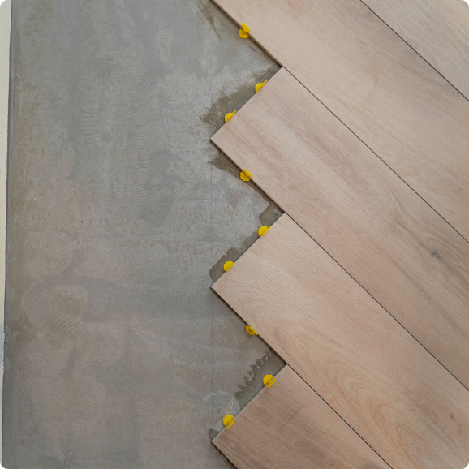
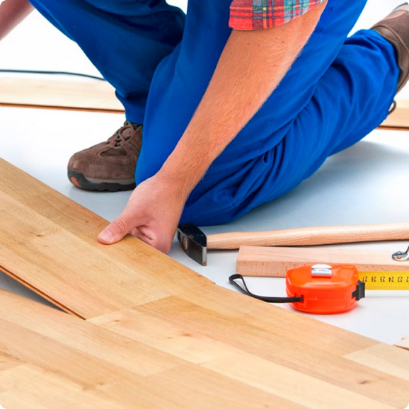
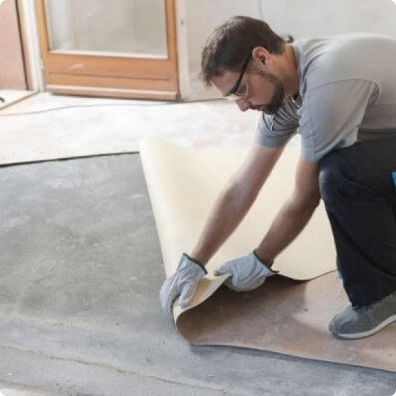
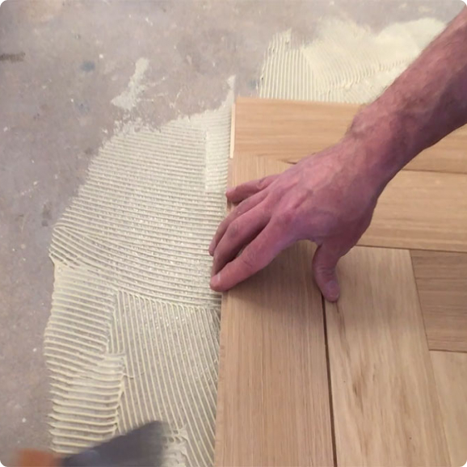
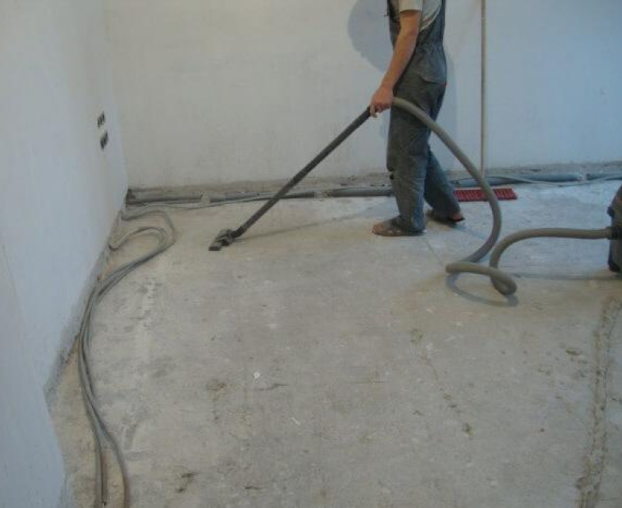
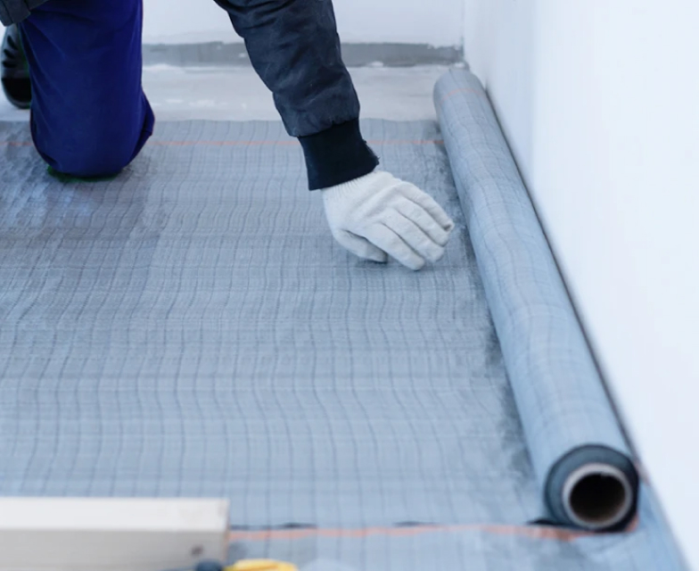
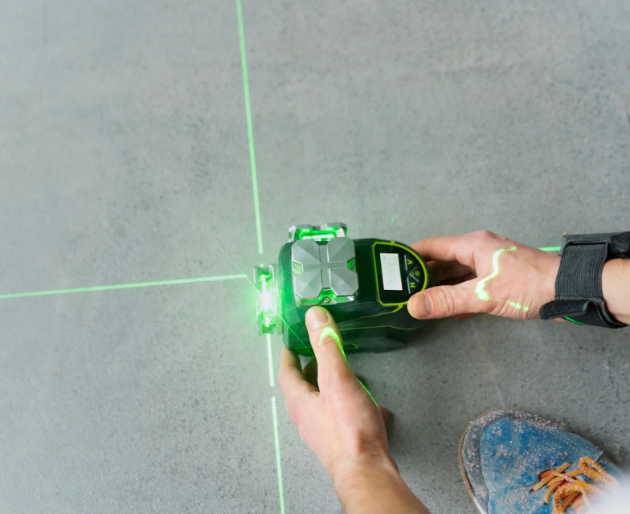
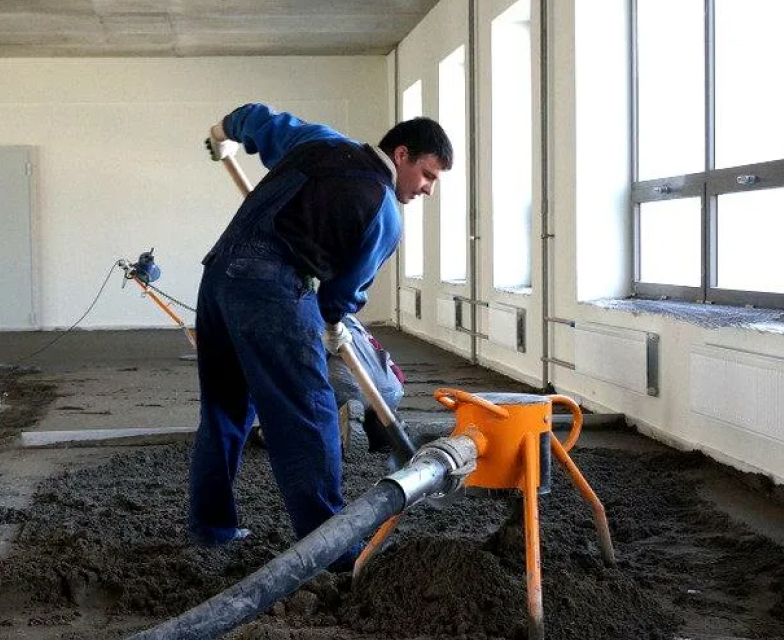
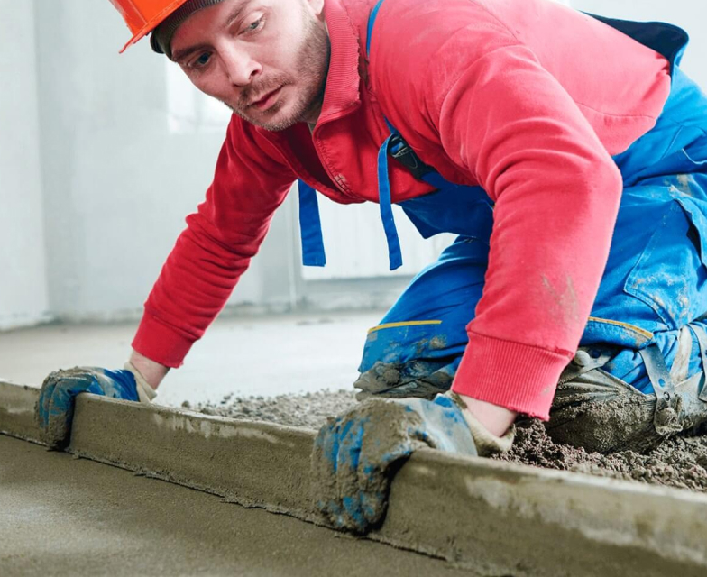
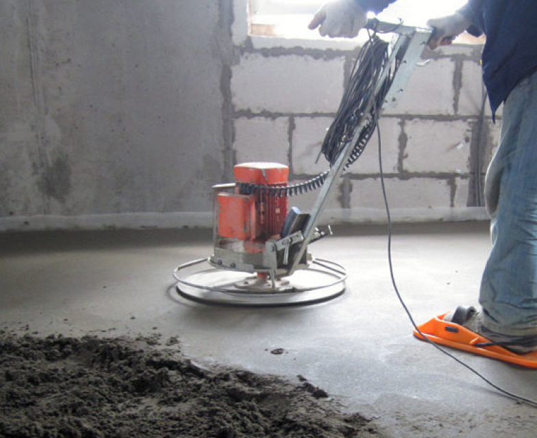

Полусухая стяжка пола под ключ
Идеально ровный пол под ключ за 1 день
Подходит для любых напольных покрытий
180 ₽ за м2
Проведем полный комплекс работ от демонтажа старых полов до монтажа новых
Сделаем для Вас эстетичный пол, не имеющий впадин или возвышений
Полусухая стяжка пола подходит для всех типов напольных покрытий: ламината, линолеума, плитки или паркета.
- 
Под плитку
- 
Под ламинат
- 
Под линолеум
- 
Под паркетную доску
Наши работы
Преимущества технологии
- Ровная геометрия пола за 1 день
- Предотвращение случаев затопления
- Качественная тепло- и звукоизоляция
- Поверхность без трещин
- Прочное и устойчивое покрытие
- Без шума, пыли и грязи
Этапы выполнения работ
- 
Подготовка основания
Проводится демонтаж старой стяжки, обеспечивается тщательная уборка рабочей поверхности.
- 
Гидроизоляция
Укладывается гидроизоляционная плёнка, а также демпферная лента для компенсации расширения стяжки.
- 
Установка маяков
Для соблюдения правильной геометрии используются маяки. Их устанавливают параллельно одной из стен по лазерному уровню. Маячковый профиль фиксируют по всей длине небольшими порциями аналогичного раствора, который используется для стяжки.
- 
Работа с раствором
Очень важно использовать качественную сухую смесь на основе цемента. После ее соединения с песком, воду заливают постепенно, доводя раствор до необходимой консистенции. Автоматическая подача готового раствора сокращает время проведения работ.
- 
Укладка стяжки
Первый слой раствора набрасывают ниже уровня маяков и быстро прессуют. Затем набрасывают второй слой немного выше уровня маяков и разравнивают.
- 
Шлифовка и сушка
Поверхность выравнивается и шлифуется при помощи специального оборудования. Для равномерного высыхания необходимо соблюдать температурный режим (20-25С).
Форма связи
Наши специалисты свяжутся с вами в течении рабочего дня